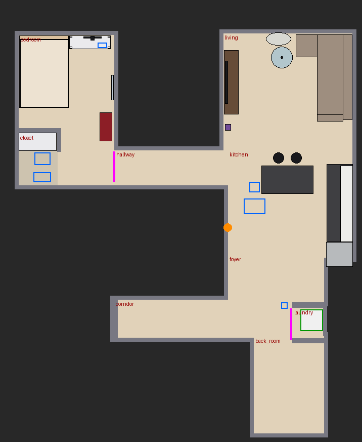
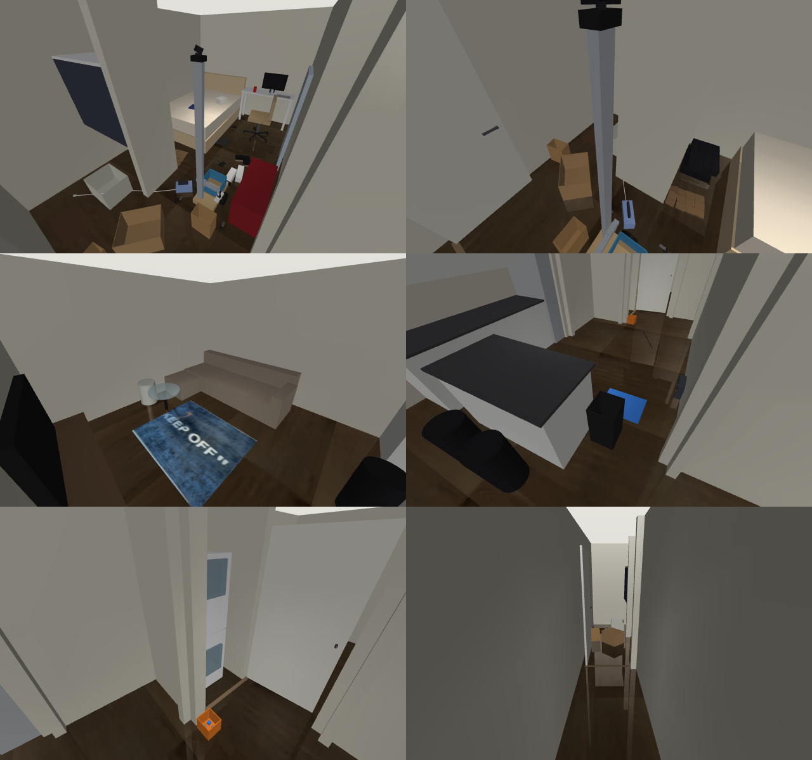

Drive the hallway
WorkedDrove 3.7 m from the bedroom to the end of the hallway, 26 W.
A house robot you can build for about $1,196, trying real chores in a simulated copy of its owner's apartment. These are scripted attempts, recorded straight from the physics sim. The ones marked "Not yet" are what the learned brain has to fix.
Each clip is one attempt with no retakes. The caption bar shows the time, the room, the battery and the power draw.
Drove 3.7 m from the bedroom to the end of the hallway, 26 W.
The can ended up in the tote.
The sneaker ended up in the tote.
The sock was not picked up (it ended up on the floor).
Cloth is floppy: the scripted grasp closes on the patches and slips. Pinching fabric is the first thing the demonstrations will teach.
The paper bag was not picked up (it ended up on the floor).
A paper bag needs a pinch on its rim, not a squeeze across it. This grasp gets its own demonstrations too.
Door opened 12 degrees (the robot's own body blocks more in this layout).
Gripper inside the dryer drum at 1.52 m.
Charging at 1.9 A after backing in from 1.2 m.
Rode out the 80 N bump; the 200 N shove tipped it over. A tipped robot stops its motors and calls for help.
The rooms are rebuilt from an iPhone LiDAR scan: walls, doorways and furniture are measured from the scan, and the floor and rug textures are cut from its photos. It is a clean recreation rather than the raw scan mesh, so colours, lighting and the movable furniture can change every episode. That keeps a camera-based brain from memorising one exact picture of the room.


| Base | Two hub motors from a used hoverboard, sprung casters, anti-tip outrigger wheels, 12 kg steel ballast, a tote on the deck |
|---|---|
| Reach | A counterbalanced lift on a 1.82 m mast (the arm runs from 0.12 to 1.62 m high) and a telescoping arm reaching 0.54 m to the side |
| Hand | Yaw, pitch and roll wrist with a parallel-jaw gripper on bus servos, and a camera in the palm |
| Senses | Lidar, pan/tilt head camera, palm camera, IMU, bumper, cliff sensors, battery monitor, dock beacon, motor encoders |
| Power | 36 V 180 Wh Li-ion; backs onto a spring-contact dock to charge itself |
| Brain | Runs on a desktop GPU over Wi-Fi; a Raspberry Pi 5 on board handles motors, sensors and safety |
| Used hoverboard (2 hub motors, mainboard; reflash with hoverboard-firmware-hack-FOC) | $50 |
| ST-Link programmer for the reflash | $10 |
| New 36 V 10S2P battery with BMS (don't reuse the hoverboard's) | $70 |
| Base: plywood/aluminium chassis, 2 spring-loaded casters, 4 outrigger arms + wheels, foam bumper | $95 |
| Steel ballast plate, 12 kg | $35 |
| Deck tote (plastic bin) + mounts | $10 |
| Lift: 1.6 m 2040 rail, V-wheel carriage, NEMA17, belt, 2:1 pulleys, constant-force spring | $150 |
| Telescoping arm: 3 heavy-duty drawer slides, NEMA17, belt | $60 |
| Stepper drivers (36 V capable, e.g. DM542-class) x2 | $24 |
| Feetech STS3250-C002 (wrist pitch, gripper) x2 | $148 |
| Feetech STS3215 12V (wrist yaw, wrist roll, head pan, head tilt) x4 | $88 |
| Bus servo driver board | $12 |
| Printed parallel-jaw gripper (rack and pinion) with TPU finger pads | $10 |
| Raspberry Pi 5 8 GB + cooler + microSD | $95 |
| Slamtec RPLIDAR C1 | $80 |
| USB RGB camera, wide (head) | $20 |
| USB RGB camera, wide (palm) | $20 |
| BNO085 IMU | $25 |
| IR cliff sensors x4 + bumper switches | $17 |
| INA226 battery monitor | $6 |
| 940 nm photodiodes + op-amp (dock beacon) x4 | $16 |
| 36 V -> 12 V 10 A and 36 V -> 5 V 5 A converters | $25 |
| E-stop, fuses, wiring, connectors | $40 |
| PETG filament + fasteners | $40 |
| Dock: 42 V 2 A charger, spring contacts, IR LED, MCU, board | $50 |
| Total | $1,196 |
|---|